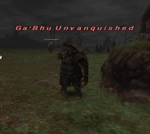

Level 75 reference · Zenith rules
|
Job: Red Mage Notorious Monster |
 |

|
Zone |
Level |
Drops |
Steal |
Spawns |
Notes | ||||||
|
47-48 |
1 |
| |||||||||
|
HP = Detects Low HP; M = Detects Magic; Sc = Follows by Scent; T(S) = True-sight; T(H) = True-hearing JA = Detects job abilities; WS = Detects weaponskills; Z(D) = Asleep in Daytime; Z(N) = Asleep at Nighttime | |||||||||||
Notes:
- Lottery Spawn From: Emerald Quadav
- Located: (J-5) - (J-6)
- Uses 2 hour Chainspell
- Duel Rapier not 100% drop, albeit quite common.
- Take much care, and use /fillmode if needed. You Will link any mobs under the ground.
Adapted from Eden Wiki: Ga'Bhu Unvanquished · Contributors and history · CC BY-SA 4.0. Revision 44687. Layout, links and optional background text adapted for Zenith.